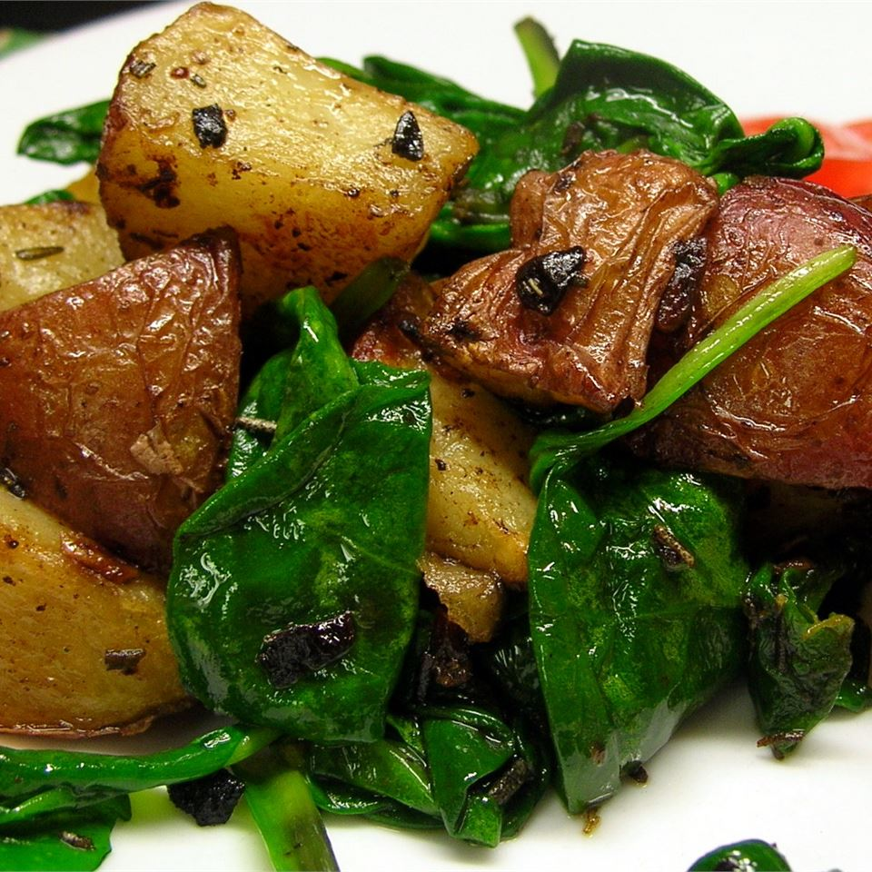

Home
Roasted Potatoes with Greens
Roasted potatoes mingle with fresh spinach in a sauce of garlic, butter,
sea salt and fresh rosemary. Finish with a drizzle of olive oil and/or a good
shredded hard cheese like Parmesan or Pecorino if you like.

Ingredients
- 6 small red potatoes, quartered
- 2 tablespoons butter
- 2 cloves garlic, minced
- 1 tablespoon fresh rosemary, chopped
- sea salt and ground black pepper to taste
- 1 cup fresh spinach leaves
Directions
- Instructions Checklist
- Step 1
- Preheat the oven to 400 degrees F (200 degrees C).
- Step 2
- Place the potatoes in a single layer in a ceramic casserole dish. Melt the
butter in a skillet over medium heat. Add garlic, and cook until golden. Stir in
the rosemary, and cook just until fragrant. Pour over the potatoes in the dish.
Season with sea salt and pepper.
- Step 3
- Roast uncovered for about 30 minutes in the preheated oven, until the potatoes
are fork tender. Remove from the oven, and toss with the spinach leaves. Return
to the oven for 1 to 2 minutes, until the spinach has wilted.
- Nutrition Facts
- Per Serving: 419 calories; protein 7.3g; carbohydrates 73.2g; fat 12g; cholesterol
30.5mg; sodium 110.9mg.
Next Recipes